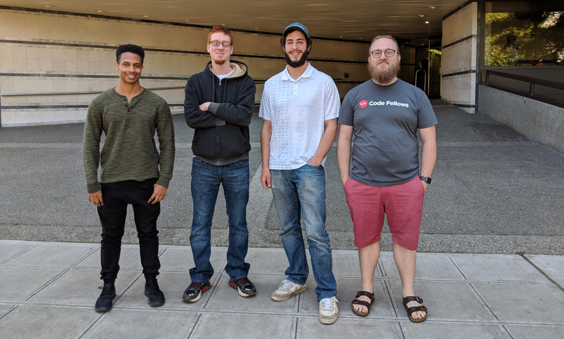
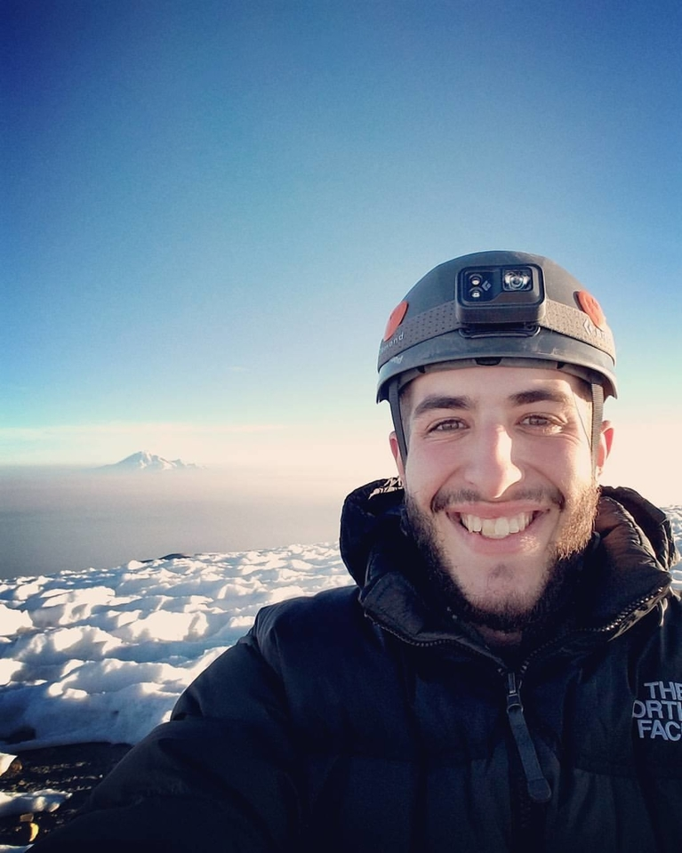
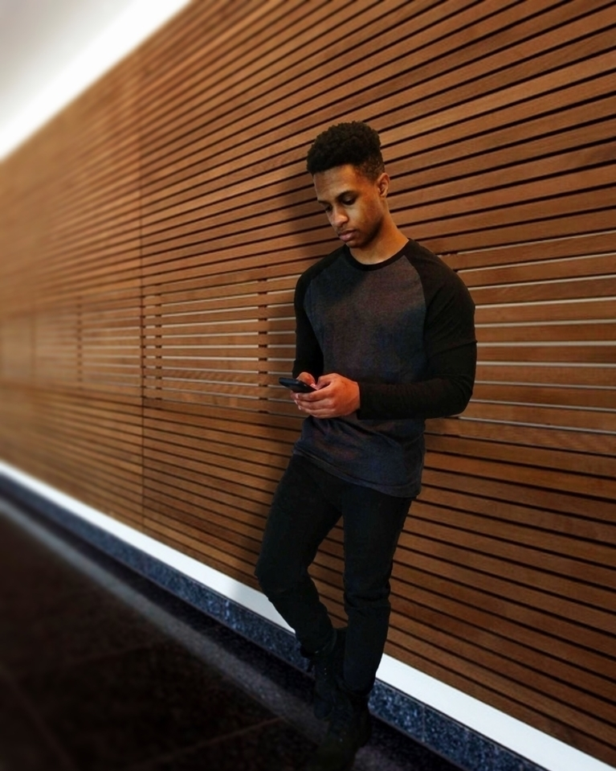
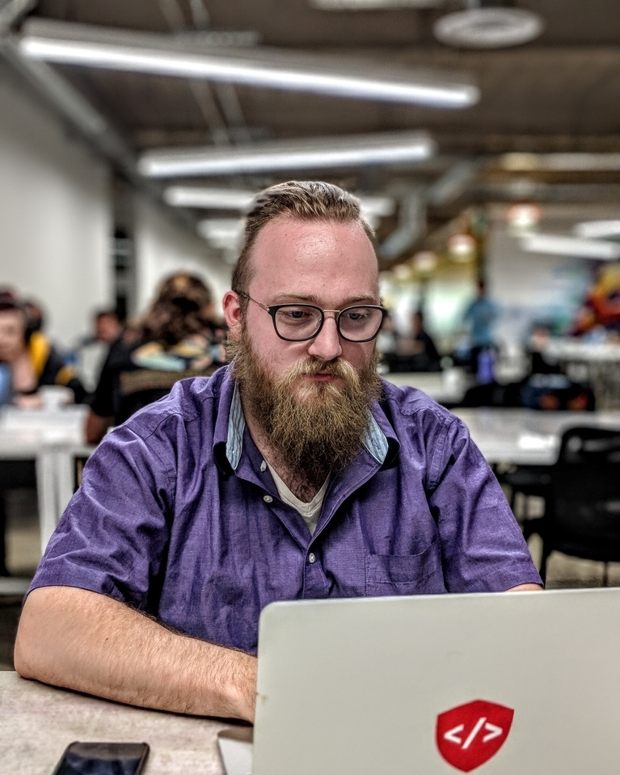
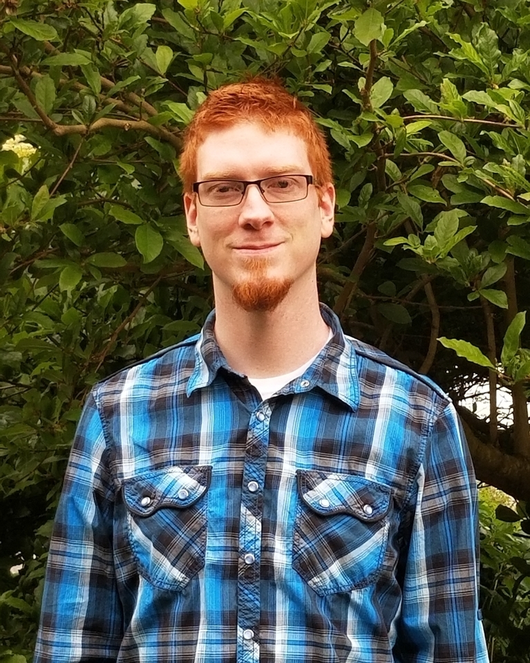

The Brew Fellows

- 
- Brandon Fenty
- I'm a Seattle native, Marine Corps Veteran, and Alpinist that loves summit beers, sci-fi, and music. I dream of living in a van and waking up in a new city every week.
- 
- Luther McKeiver
- Hey I’m from Florida love EDM and beaches, and in my free time I run, play video games, and I am a avid movie connoisseur.
- 
- Tyler Pearson
- Seattle based software developer with an emphasis on JavaScript and Python. Loves beer, video games, and Land Rovers.
- 
- Nicklas Di Pietro
- Nicklas is from Southern California; here since 2011. He's a fan of beer. In his offtime he's also a fan of Pugs, 3D modeling, and of course video games / coding.